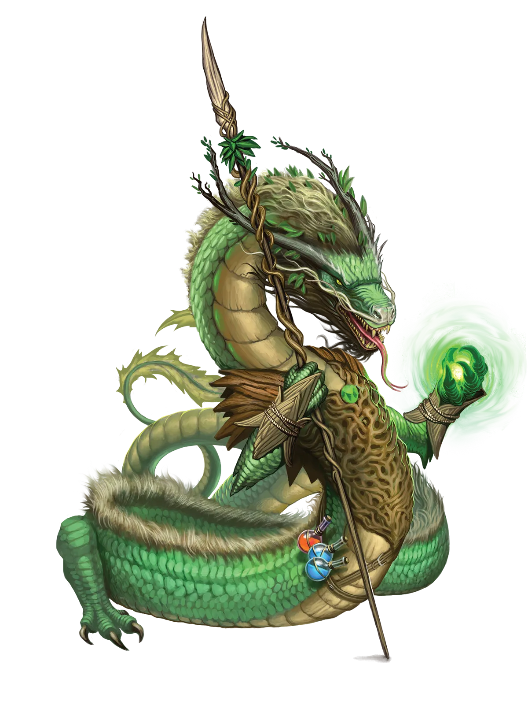
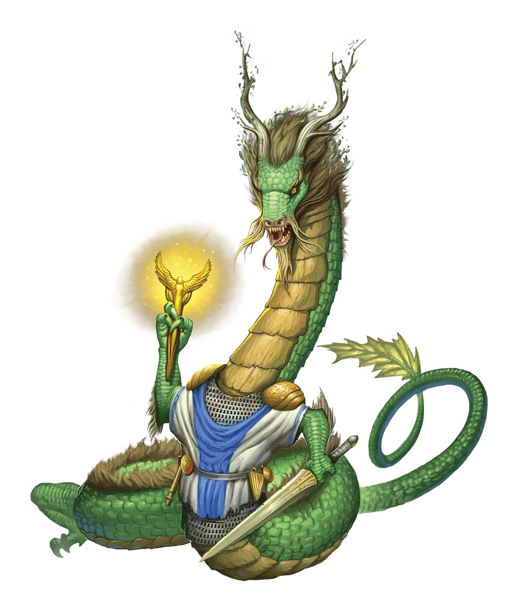

为了森林
森林龙类喜欢宣称他们的行动是代表自然，他们对文明的蔑视源于更伟大的事业。然而，我们这些与森林龙类有些相似特质的绿龙，早已迅速断定这不过是一个方便的借口。俗话说得好，只见树木，不见森林。
森林龙 Forest Dragon |
|
|
森林龙类偏爱旧途行事，摒弃技术与文明，向往与自然和谐共处的简朴生活。因此，许多森林龙类最初将永恒之光仪式视为应当鄙弃之物。在仪式开始于龙类间流传的数十年间，没有森林龙类愿意施行它。但慢慢地，极其缓慢地，由于少数龙类迫于极度需要而不得不使用仪式，它设法进入了森林龙类的世界，并开始站稳脚跟。目前，对大多数森林龙类而言，永恒之光仪式仍然过于新潮，但对另一些龙类来说，它已被舒适地接纳和理解，足以成为他们接受的生死观的一部分。毕竟，永光是一种魔法仪式，而非技术或文明的另一重束缚。因此，它自有其价值。 尽管如此，持此观点的森林龙类仍是少数，且往往偏于年轻。他们可能会发现长辈对他们抱有深深的蔑视与嘲讽，但在森林龙类的最幼与最老之间，即便没有如永恒之光仪式这般两极分化的生活选择来引出敌意，这种情况也算不上闻所未闻。由于森林龙类本就常与动物为伴，这种孤立未必会困扰他们。然而，这可能导致古老的传统派森林龙类与强壮的永光派森林龙类之间的危险对抗，后者可能还带着一支冒险队伍同行。 永光森林龙类对其冒险队伍极为挑剔。他们极其偏爱同样渴望远离文明的类兽、野兽和畸形盟友。虽然他们愿意接受任何种族的盟友，但错误的背景或职业可能立刻导致合作告吹。例如，奇械师除最危急的情况外都会被忽略。对永光森林龙类而言，最重要的事情是他们的冒险发生在荒野之中，而非定居点、农田或其他被文明驯化的地方。理想的任务可能是探索某座古代遗迹，劫掠其中的宝藏，然后以某种方式摧毁那冒犯性的建筑，让自然得以重新占据该地。其次的任务则是追捕偷猎者、刀耕火种的林务员，或其他为了财富而损害或剥削环境之人。一个满足森林龙类愿望的队伍会发现，他们的森林龙类同伴非常通情达理、易于相处，乐于帮助其他成员，有时甚至像森林的慷慨馈赠一样大方。但当森林龙类被迫与惹恼他们的人同行、执行不喜欢的任务，或前往文明之地时，他们在交流中会变得极其暴躁和小气，像森林之冬一样严酷无情。森林龙类比其他任何职业都更可能成为德鲁伊或游侠。 为了森林 森林龙类喜欢宣称他们的行动是代表自然，他们对文明的蔑视源于更伟大的事业。然而，我们这些与森林龙类有些相似特质的绿龙，早已迅速断定这不过是一个方便的借口。俗话说得好，只见树木，不见森林。 森林龙特质 Forest Dragon Traits 你出身于一脉厌恶科技与文明、狂热守护自然的森林龙世系。 |
  |